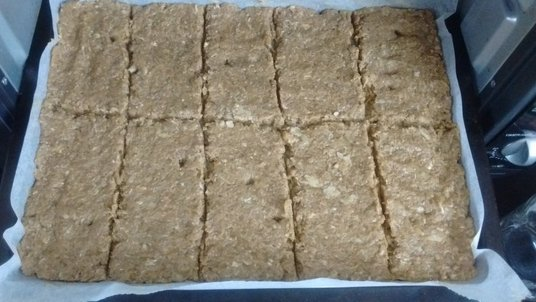
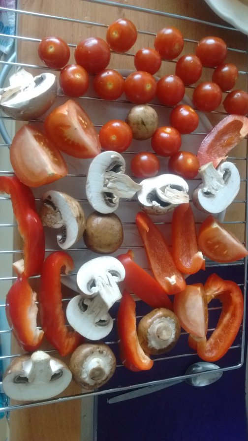

کباب کوبیده را در تنور (همان oven) هم میتوان پخت. اصالت گوشت کباب شده روی آتش را ندارد. ولی دلیلی ندارد خوشمزه نباشد. نیم کیلو گوشت چرخکرده گاو پانزده درصد چربی را با سه تا پیاز رندهشده و نیم قاشق نمک و کمی زردچوبه و پودر سیر و فلفل قرمز خشک و چند قطره آبلیمو مخلوط میکنیم. زعفران دمکرده هم بزنید اگر وسعتان رسید. محصول را حین افزودن دو قاشق آرد سوخاری خوب ورز داده و روی کاغذ کیکپزی کف سینی تنور پهن میکنیم. مثل این:

توری تنور را هم بردارید و رویش تکههای قارچ و گوجهفرنگی و فلفل دلمه بگذارید. آبلیمو و نمک بزنید و با اسپری روغن زیتون بپاشید. شبیه این:

سینی گوشت را بگذارید وسط تنور و توری سبزیجات را یک ردیف بالایش. روی دمای دویست و بیست درجه سانتیگراد بین سی تا چهل دقیقه بپزید. گوشت را گاهی نگاهکنید که خشک نشود. با سبزی تازه بخورید. در مصرف این غذا حتمن زیادهروی کنید.
پینوشت: سه پیمانه برنج را همان اول با آب سرد بشویید و با چهار و نیم پیمانه آب و چند قاشق روغن زیتون و نمک و کمی پودر فلفل دلمه و دارچین و فلفل قرمز و سیاه و پودر سیر بگذارید خیس بخورد. همزمان با تنور پلوپز را روشن کنید.